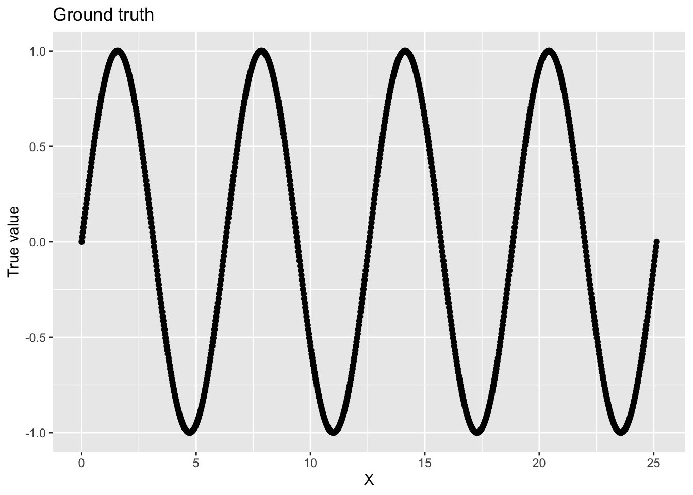
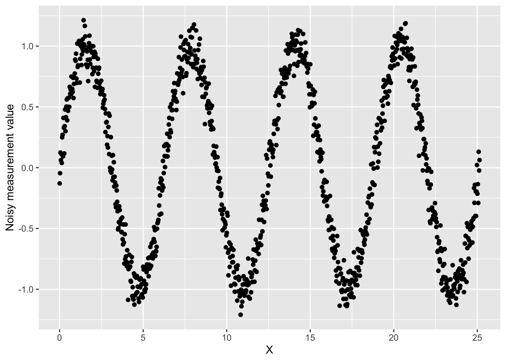
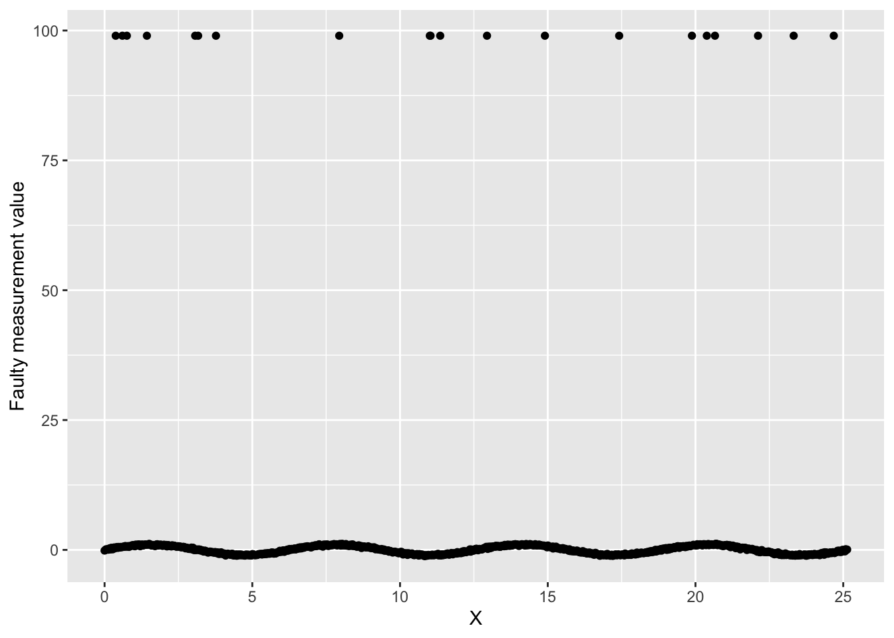
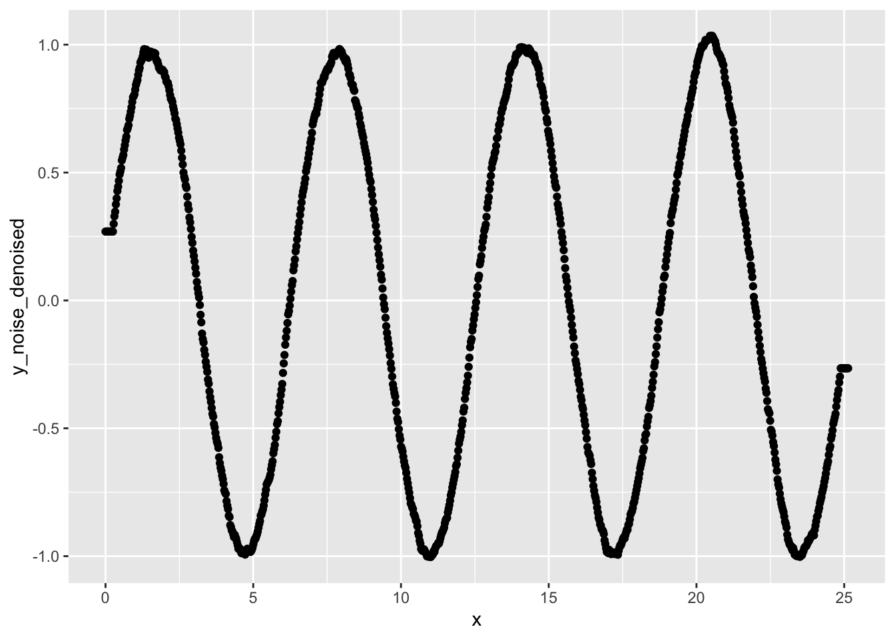
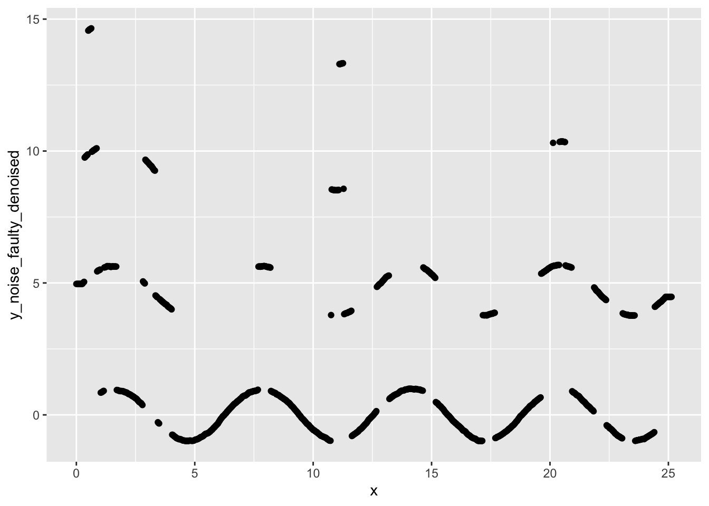
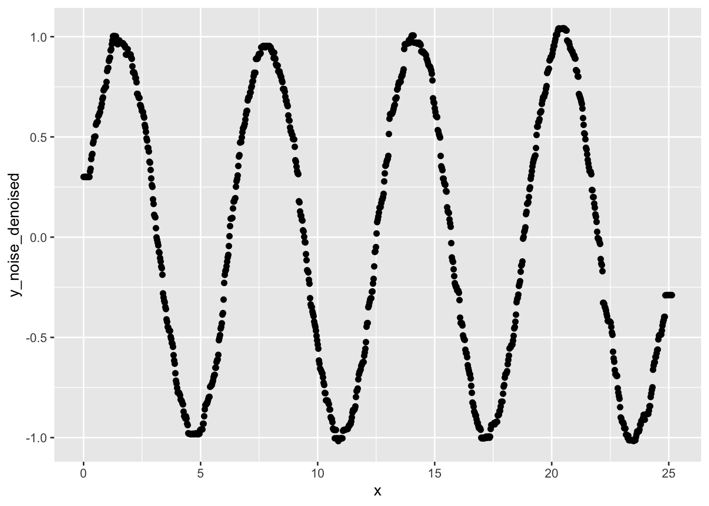
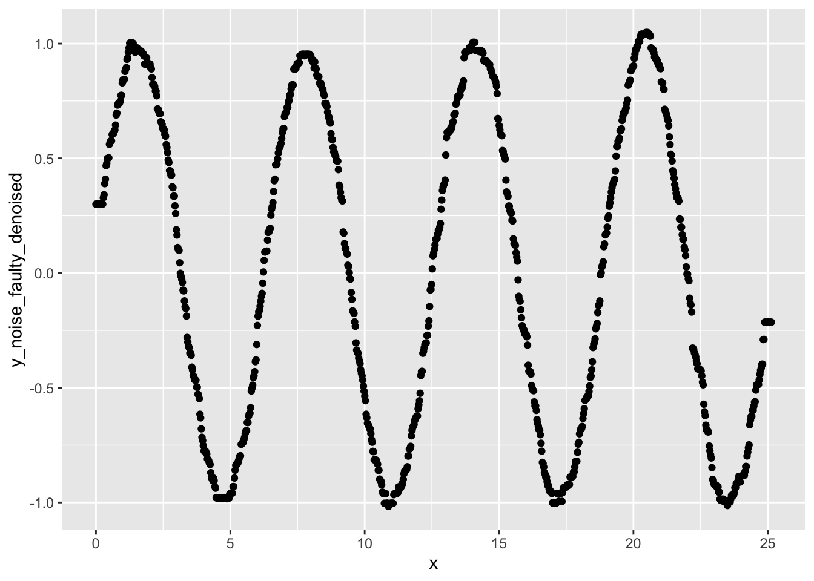

Chapter 13 Simple denoising examples
library(tidyverse)## ── Attaching packages ────────────────────────────────────────────────────── tidyverse 1.3.2 ──
## ✔ ggplot2 3.3.6 ✔ purrr 0.3.4
## ✔ tibble 3.1.8 ✔ stringr 1.4.1
## ✔ readr 2.1.2 ✔ forcats 0.5.2
## ── Conflicts ───────────────────────────────────────────────────────── tidyverse_conflicts() ──
## ✖ dplyr::filter() masks stats::filter()
## ✖ dplyr::lag() masks stats::lag()In this exercise:
- First, we’ll generate a time series of “measurements” where the process we are measuring behaves exactly like a sine wave. This will be our “ground truth” signal.
- Next, we’ll simulate different types of noise that could result from imperfect measurements.
- Finally, we’ll apply 2 basic denoising techniques to each of our noisy signals.
13.1 Generating the ground truth
For this demonstration, we’ll generate a signal that behaves like a sine wave. Feel free to adjust any of the parameters to see how it influences our ability to denoise the signal.
# Resolution gives the number of measurements in our signal.
resolution <- 1000
# x_range_min gives the minimum x value in our signal.
x_range_min <- 0
# x_range_max gives the maximum x value in our signal.
x_range_max <- (8 * pi)
# Generate our signal x,y:
x <- (seq(from=x_range_min, to=resolution) / resolution) * x_range_max
y <- sin(x)
# Create a data frame
data <- data.frame(x=x, y_true=y)data$y_true gives the ground truth signal.
We can graph our ground truth:
ggplot(data, aes(x = x, y = y_true)) +
geom_point() +
labs(
x = "X",
y = "True value",
title = "Ground truth"
)
13.2 Adding some noise
First, let’s simulate that we had a noisy sensor such that each measurement has a small amount of random noise. To do so, we’ll add a little bit of Gaussian noise to our ground truth signal.
# noise_sd controls the level of noise applied to each measurement
noise_sd <- 0.1
data$y_noise <- data$y + rnorm(length(data$y), 0, 0.1)We can graph this noisy signal:
ggplot(data, aes(x = x, y = y_noise)) +
geom_point() +
labs(
x = "X",
y = "Noisy measurement value"
)
Next, let’s add another kind of noise that we might encounter with our sensor. What if our sensor randomly fails, returning a nonsense value (in this case, let’s say 99).
prob_sensor_failure <- 0.02 # Sensor fails 2% of the time
failure_value <- 99
# "Simulate" when our sensor fails. Use rbinom to flip a biased coin for each object in our data.
data$sensor_failure <- rbinom(nrow(data), 1, prob_sensor_failure)
data$y_noise_faulty <- mapply(
function(y, fail) {
if (fail) {
return(failure_value)
} else {
return (y)
}
},
data$y_noise,
data$sensor_failure
)Graph our faulty sensor data.
ggplot(data, aes(x = x, y = y_noise_faulty)) +
geom_point() +
labs(
x = "X",
y = "Faulty measurement value"
)
We have our nice signal, and then we have those sensor failure measurements throwing everything off.
13.3 Denoising using a rolling average
Let’s try denoising using a rolling average. This technique loops over each value in your sequence, setting that value to the average of its neighbors. The number of neighbors is determined by the “window size”.
# This function calculates a rolling average over the sequence parameter.
# window_width defines how far the window extends to either side of the each index.
rolling_avg <- function(sequence, window_width=1) {
avgs <- c()
for (i in seq_along(sequence)) {
window <- c(i)
for (w_i in 1:window_width) {
left <- i - w_i
right <- i + w_i
# Check that our window doesn't walk off the edge of our sequence.
# If so, extend the other side of the window.
if (left < 1) {
left <- (i + window_width) + (abs(1 - left))
}
if (right > length(sequence)) {
right <- (i - window_width) - ((right - length(sequence)) )
}
window <- c(window, left)
window <- c(window, right)
}
avgs <- c(avgs, mean( sequence[window] ))
}
return(avgs)
}Apply our rolling average function to y_noise
window_w <- 10
data$y_noise_denoised <- rolling_avg(
data$y_noise,
window_width=window_w
)
ggplot(data, aes(x=x, y=y_noise_denoised)) +
geom_point()
Much smoother! The rolling average works well when you want to smooth out a small magnitude of random noise.
Apply our rolling average function to y_noise_faulty:
window_w <- 10
data$y_noise_faulty_denoised <- rolling_avg(
data$y_noise_faulty,
window_width=window_w
)
ggplot(data, aes(x=x, y=y_noise_faulty_denoised)) +
geom_point()
Yikes! Our signal looks worse than it did before we applied the rolling average denoising.
13.3.1 Exercises
- Generate a small sequence of 10 random values.
On paper, apply a rolling average filter to your sequence.
You decide the window size.
- What would happen if you increased your window size?
- What about if you decreased your window size?
- Is the rolling average a good denoising approach for
y_noise? What abouty_noise_faulty? - Did the rolling average improve how representative
y_noise_faultyis of the ground truth signal?- Try calculating the mean squared error for each of
y_noiseandy_noise_denoised. Does error go down? - What about for
y_noise_faultyandy_noise_faulty_denoised?
- Try calculating the mean squared error for each of
- What happens when you make the rolling average window smaller? Bigger?
- What happens when you add more noise to the signal?
- Identify any lines of code that you don’t understand. Use the documentation to figure out what those lines of code are doing.
13.4 Denoising using a median filter
A median filter is similar to applying a rolling average, except instead of replacing each value in our sequence with the average of its neighbors, we replace it with the median of its neighbors.
# This function calculates a rolling average over the sequence parameter.
# window_width defines how far the window extends to either side of the each index.
median_filter <- function(sequence, window_width=1) {
avgs <- c()
for (i in seq_along(sequence)) {
window <- c(i)
for (w_i in 1:window_width) {
left <- i - w_i
right <- i + w_i
# Check that our window doesn't walk off the edge of our sequence.
# If so, extend the other side of the window.
if (left < 1) {
left <- (i + window_width) + (abs(1 - left))
}
if (right > length(sequence)) {
right <- (i - window_width) - ((right - length(sequence)) )
}
window <- c(window, left)
window <- c(window, right)
}
avgs <- c(avgs, median( sequence[window] ))
}
return(avgs)
}Apply our rolling average function to y_noise:
window_w <- 10
data$y_noise_denoised <- median_filter(
data$y_noise,
window_width=window_w
)
ggplot(data, aes(x=x, y=y_noise_denoised)) +
geom_point()
Apply our rolling average function to y_noise_faulty:
window_w <- 10
data$y_noise_faulty_denoised <- median_filter(
data$y_noise_faulty,
window_width=window_w
)
ggplot(data, aes(x=x, y=y_noise_faulty_denoised)) +
geom_point()
13.4.1 Exercises
- Do you notice any differences in the results of applying a median filter versus applying a rolling average?
- Generate a small sequence of 10 random values.
On paper, apply a median filter to your sequence. You decide the window size.
- What happens if you increase your window size?
- What about if you decrease your window size?
- Is the median filter a good denoising approach for
y_noise? What abouty_noise_faulty?- Try calculating the mean squared error for each of
y_noiseandy_noise_denoised. Does error go down? - What about for
y_noise_faultyandy_noise_faulty_denoised?
- Try calculating the mean squared error for each of
- Did the median filter improve how representative
y_noise_faultyis of the ground truth signal? - What happens when you make the median filter window smaller? Bigger?
- What happens when you add more noise to the signal?
- Identify any lines of code that you don’t understand. Use the documentation to figure out what those lines of code are doing.
13.5 Further exploration
As we talked about in class, the appropriate-ness of different denoising techniques will depend on your data and your particular application domain.
The R community has implemented many denoising techniques.
For example, the signal package includes many signal denoising functions.